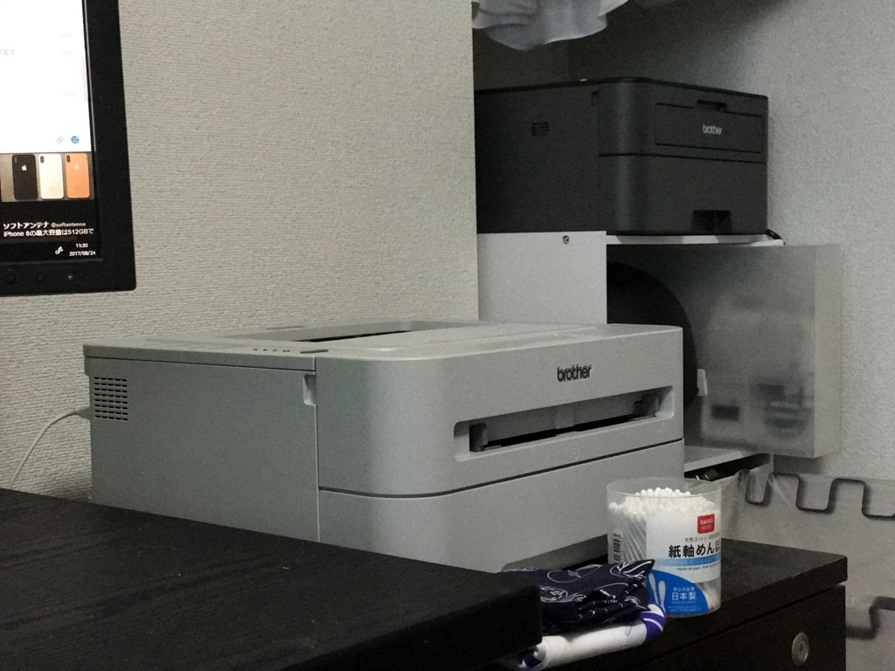
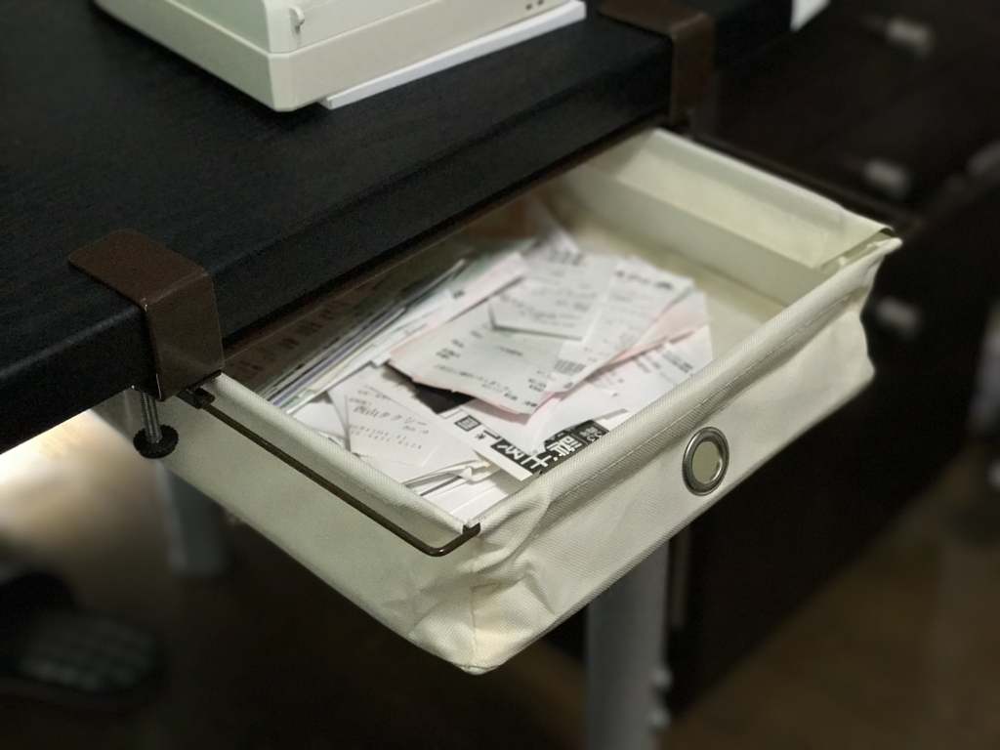
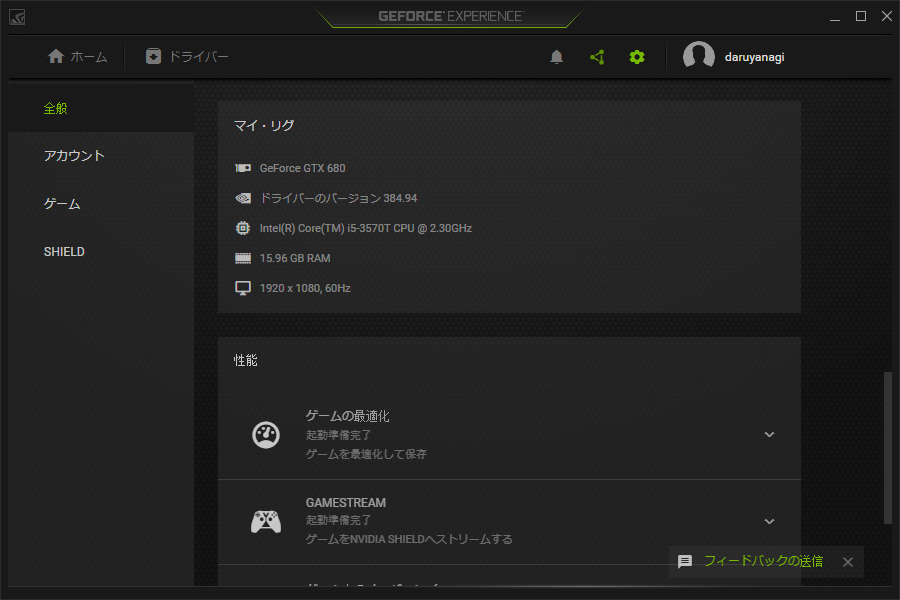
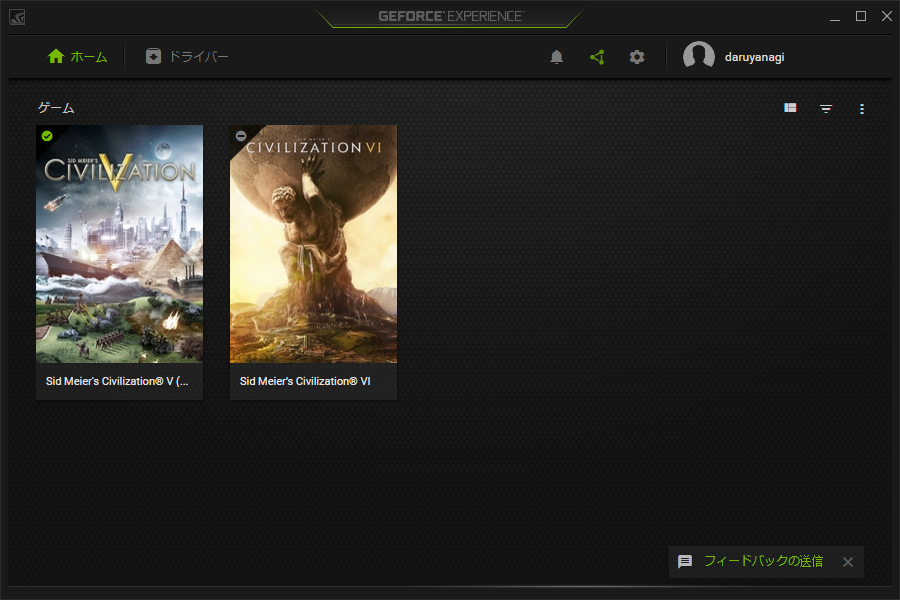
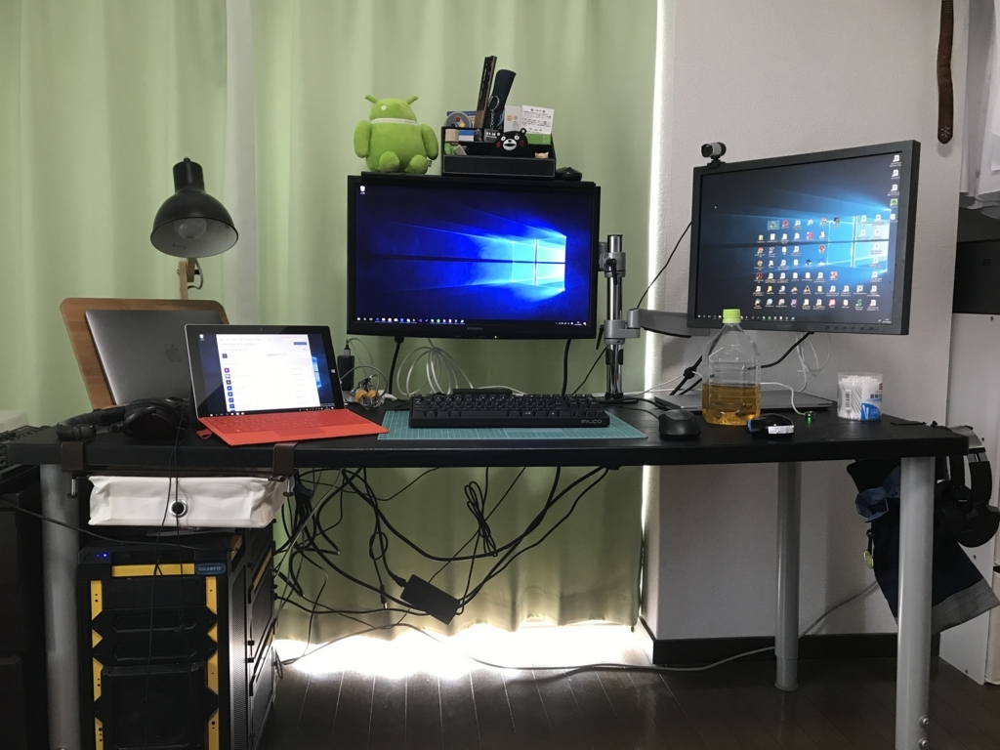

お仕事部屋の改造計画を進めている
公開日：
この前、Surface Laptop でトリプルディスプレイ環境を作ってみたりした。お仕事部屋をアップデートしたのは引っ越し以来初めてだったけど、ついでにいろいろ便利にしてみようとここ1カ月頑張っていました。
プリンターをワイヤレス化

おカネのない時期に買ったので、ウチのレーザープリンターは有線接続のみ。USB ケーブルが届く範囲にしか置くことができないし、デスクトップ PC 以外から利用するのが大変不便でした。というわけで、ネットワーク対応のものに買い替えてみました。

brother レーザープリンター A4 モノクロ JUSTIO HL-L2365DW
- 出版社/メーカー: ブラザー工業
- 発売日: 2014/10/09
- メディア: Personal Computers
- この商品を含むブログ (2件) を見る
以前使っていたブラザー製のものがリーズナブルながらキッチリ働いてくれて気に入っていたので、新しい機種はそれにネットワーク機能がついているものを選択。サイズもほぼ同じで、色が灰色から黒色になっただけです。
設置場所も机からは少し離れたところに置いてあるカラーボックスの上に逃がして、机周りが広くなりました。
引き出しを追加する
おカネのない時期に買ったので、ウチの机は脚四本に天板一枚のシンプルなものなのです。これはこれで大変気に入っているのですが、収納が少ないのはちょっと困りものですね。そこで Amazon を散歩していて見つけた便利グッズを導入してみました。
ASIN:B011DYCVWG:B011DYCVWG
これで打ちの机に引き出しが生えました！

あんまり重いものは入れられないので、領収証の仮置き場に使っています。ついでにデスクトップオーガナイザー（まぁ、タダのペン立て）も買いました。
![[OneStepAdvance] デスクオーガナイザー ペン立て・卓上収納・文具ケース 五角 (ブラック)](https://images-fe.ssl-images-amazon.com/images/I/515h4owE-jL._SL160_.jpg "[OneStepAdvance] デスクオーガナイザー ペン立て・卓上収納・文具ケース 五角 (ブラック)")
[OneStepAdvance] デスクオーガナイザー ペン立て・卓上収納・文具ケース 五角 (ブラック)
- 出版社/メーカー: OneStepAdvance
- メディア: オフィス用品
- この商品を含むブログを見る
ちょっと大きめのものが欲しかったので満足。モニターの上に置いていますが、これは地震に弱そうやな……なんかいい方法考えないと。
ちなみに、モニターの上に収納を追加するキングジムの便利グッズもおすすめです。
グラフィックスカードを追加

あと、ご厚意でいただいていたグラフィックスカードも組み込んでみました。GW 前にもらったのに、組み込んだのはお盆になってからだという……。まぁ、電源の容量が足りるかどうかがちょっと心配だったんですよね。メインのお仕事環境壊したらあとあと面倒だし。結果的には杞憂で、さっさと導入しちゃえばよかったなーって感じです。冷却ファンも静か目で、気にならないといえばウソになるけど、まぁ、許容範囲内かな。
グラフィックカードは GeForce GTX 680 という5年前ぐらいに出たヤツだったのですが、Civilization 6 の動きがちょっとぬるぬるになりました。内蔵グラフィックでは一部エフェクトが省略されていたのかな？ ウチの斥候が敵蛮族の槍兵に殺されるアニメーションが割とえげつなくて（槍で串刺しにして突き上げてポイや！）、ちょっと悲しかったです。


ドライバーの管理やゲームの個別最適化を行うユーティリティー「GeForce Experience」のいれてバッチリです。

油断したらすぐ本や缶ビールだらけでぐちゃぐちゃになったりしますが、なるべく今の状態を保つというか、もう少し人間らしい部屋にしたいなと思います。裏のケーブル、何とかせんとなー。